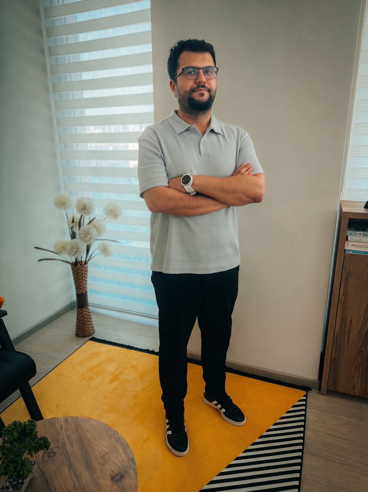

Uzman Klinik Psikolog olarak çocuklar, ergenler ve yetişkinlerle çalışıyorum. Özellikle disleksi, otizm spektrumu ve özel gereksinimli çocukların değerlendirme ve destek sürecinde ailelerin yanında olmayı önemsiyorum.
[Buraya kısa bir kariyer özeti yazın: lisans/yüksek lisans eğitiminiz, klinik psikoloji uzmanlığınızı aldığınız kurum, çalıştığınız kurumlar ve kaç yıldır bu alanda çalıştığınız gibi bilgiler.]
Çalışmalarımda çocuğun ve ailenin güçlü yönlerine odaklanan, yargılamayan ve şeffaf bir yaklaşımı benimsiyorum. Terapi sürecinin her adımını aileyle birlikte planlıyor, değerlendirme sonuçlarını anlaşılır bir dille paylaşıyorum.

[Üniversite adı] — Psikoloji Lisans, [Yıl]
[Üniversite adı] — Klinik Psikoloji Yüksek Lisans, [Yıl]
WISC-4 Zeka Testi Uygulayıcı Sertifikası
AGTE (Ankara Gelişim Tarama Envanteri) Uygulayıcı Sertifikası
MOXO Dikkat Testi Uygulayıcı Sertifikası
Kabul ve Kararlılık Terapisi (ACT)
Bilişsel Davranışçı Terapi (BDT)
Çocuk ve Ergen Terapisi
[Varsa üye olduğunuz meslek odaları/dernekler — örn. Türk Psikologlar Derneği]
Özellikle çocuklarla çalışırken aileyi sürecin dışında bırakmıyor, düzenli olarak bilgilendiriyorum.
ACT ve BDT gibi etkinliği araştırmalarla desteklenmiş yöntemleri, danışanın ihtiyacına göre uyarlayarak kullanıyorum.
Test sonuçlarını teknik terimlere boğmadan, aileyle ve gerektiğinde okulla anlaşılır şekilde paylaşıyorum.